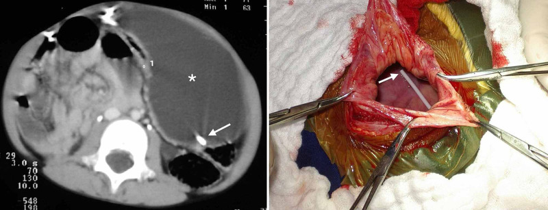
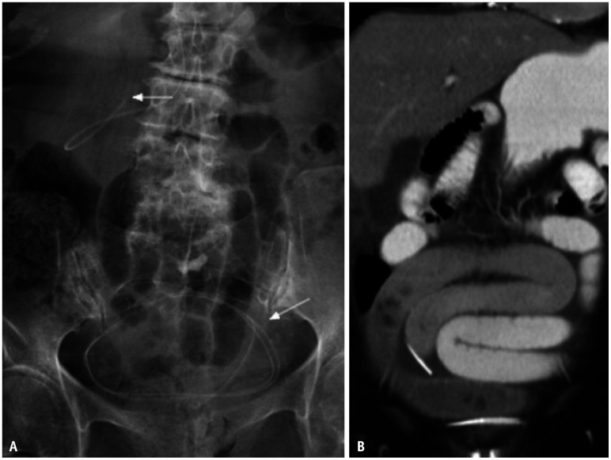
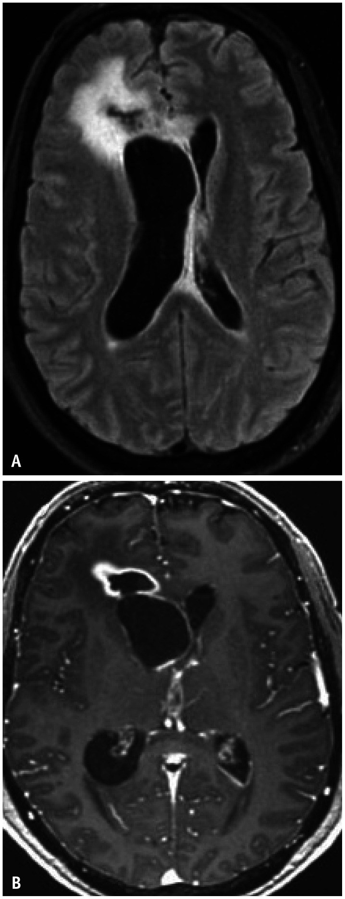

252 — Biến chứng muộn của shunt não thất: gãy – ly giãn catheter, nhiễm trùng, pseudocyst ổ bụng, di trú / Late complications of CSF shunts: fracture, disconnection, infection, abdominal pseudocyst and migration
Tags: pattern:hong-thiet-bi pattern:nhiem-trung pattern:tu-dich vung:so-nao vung:shunt protocol:shunt-series protocol:CT-so-nao anatomy:shunt-nao-that
Mức chắc chắn (certainty): tổng hợp y văn (literature synthesis) — tổng quan hình ảnh có số liệu (Korean J Radiol 2026, PMC13437215), tổng quan biến chứng ổ bụng (Cureus 2021, PMC7877257) + ca pseudocyst ở trẻ spina bifida; mọi tỷ lệ lấy đúng như nguồn, chỗ chưa rõ ghi "chưa rõ".
Bài này bàn biến chứng muộn (sau khi shunt đã hoạt động): gãy/ly giãn catheter, tắc nghẽn, di trú đầu xa, nhiễm trùng, pseudocyst/dịch ổ bụng, dẫn lưu quá mức. Quyết định chụp CT ở trẻ có shunt sau chấn thương đầu nằm ở 251; rò dịch não tủy nền sọ ở 244; tăng áp lực nội sọ và theo dõi đa phương thức ở 234.

Trái: CT bụng — khối dịch khu trú (*) trong ổ phúc mạc trái, đầu catheter (mũi tên trắng) nằm trong khối dịch = pseudocyst dịch não tủy. Phải: hình mổ — thành nang dày, đầu catheter nằm trong lòng nang. Nguồn: Ferreira Furtado LM et al., Cureus 2021 (PMC7877257), Fig. 2, CC BY 3.0.1. Tổng quan bệnh học – cơ chế hình ảnh
- Shunt não thất là thiết bị "dễ hỏng" nhất trong ngoại thần kinh nhi: tỷ lệ hỏng 30–40% trong năm đầu và khoảng 50% đến năm thứ hai ở trẻ; shunt não thất–ổ bụng (ventriculoperitoneal shunt, VPS) đơn thuần có tỷ lệ hỏng 11–25%, và ≥ 60% bệnh nhân phải mổ sửa shunt ít nhất một lần trong đời (PMC13437215, PMC7877257). Vì vậy "đau đầu ở trẻ có shunt" là một cấp cứu mặc định cho đến khi chứng minh shunt còn hoạt động.
- Tắc nghẽn (obstruction) là nguyên nhân hỏng shunt hay nhất; tắc đầu gần (proximal) chiếm > 50% các ca hỏng ở trẻ. Vật tắc: đám rối mạch mạc (choroid plexus), cục máu, mảnh tổ chức; đầu xa tắc do gập góc (kinking) hoặc do pseudocyst.
- Gãy catheter (fracture) gần như chỉ xảy ra ở catheter xa, giữa van và phúc mạc, hay gặp nhất ở vùng cổ vì cổ động + sẹo dính + trẻ lớn nhanh; canxi hóa ống catheter theo thời gian làm tăng nguy cơ gãy. Vì đầu xa còn trôi theo đường hầm dưới da/ổ bụng nên trên phim thường thấy khoảng hở lớn giữa hai đầu — đây là dấu hiệu rất đặc hiệu.
- Ly giãn (disconnection) xảy ra sớm sau mổ (nối đầu gần–bầu chứa, van–catheter xa) do vật liệu/lỗi kỹ thuật; nhưng ly giãn muộn ở trẻ do sự phát triển cơ thể kéo căng ống và mối nối. Canxi hóa quanh hai đoạn rời = quá trình mạn, đã ly giãn từ lâu.
- Nhiễm trùng shunt là nguyên nhân hỏng thứ hai: phần lớn trong 6 tháng đầu, giảm dần sau đó; Staphylococcus epidermidis ~50%, S. aureus ~20%, trực khuẩn gram âm ~15%. Yếu tố nguy cơ: tuổi nhỏ, đã mổ não/nhiều lần sửa shunt, có ống mở thông dạ dày (gastrostomy). Catheter tẩm kháng sinh giảm nhiễm từ 6,0% → 2,2%; bó quy trình mổ giảm từ 5,7% → 1% ở một trung tâm nhi.
- Pseudocyst dịch não tủy (abdominal CSF pseudocyst / CSFoma): khoang dịch khu trú có vỏ xơ bao quanh đầu catheter xa, gặp ở 1–4,5% trẻ có VPS (y văn rộng 0,25–10%), có thể xuất hiện nhiều tháng đến nhiều năm sau đặt. Cơ chế: nhiễm trùng âm ỉ nồng độ thấp + dính phúc mạc + protein dịch não tủy cao làm giảm hấp thu; thường gặp hơn ở trẻ spina bifida đã mổ nhiều lần.
- Dẫn lưu quá mức (over-drainage) → hội chứng não thất khe (slit ventricle syndrome, SVS): khoảng 10% trẻ đặt shunt từ nhỏ sau 10 năm; van điều chỉnh lưu lượng (flow-regulated) giảm SVS ~2/3 so với van chênh áp.
- Tụ dịch dưới màng cứng sau đặt shunt mới: ~3%; đa số không triệu chứng, tự hết, nhưng máu tụ dưới màng cứng mạn canxi hóa có thể tồn tại nhiều năm và là "phông nền" khi trẻ bị chấn thương đầu.
- TẠI SAO hình ảnh thay đổi:
- CT: đầu catheter cản quang nằm trong não thất/bụng; não thất to hơn so với phim nền mới là chốt của rối loạn chức năng. Kèm phù quanh não thất (transependymal edema), giãn bể, dịch dưới da đầu, phù dọc đường đi catheter.
- X-quang shunt series: kim loại/ barium trong ống cho thấy đứt đoạn, khoảng hở, gập góc, di trú; nhưng mối nối và van có thể cản quang kém → chỗ "trông như đứt" có thể chỉ là linh kiện không cản quang.
- Siêu âm bụng: pseudocyst = khối dịch có vách, đầu catheter là đường cản âm/echogenic trong lòng nang; ascites = dịch tự do, phân bố đều giữa các quai ruột.
- Shuntography (đồng vị phóng xạ hoặc iohexol): thuốc lan tự do hai bên ổ bụng = shunt thông; khu trú một chỗ quanh đầu catheter = tắc một phần/pseudocyst; không thấy thuốc trong ổ bụng = tắc hoàn toàn.
- Ngưỡng định lượng cần nhớ:
- Nhiễm trùng: cấy dịch não tủy có thể âm vì shunt "cô lập" ổ nhiễm; cấy đầu catheter nhạy hơn dịch não tủy (một nghiên cứu xác định nhiễm trùng ở 66% mẫu cấy đầu catheter — PMC7877257).
- Pseudocyst: chẩn đoán khi dịch khu trú quanh đầu catheter, có vách rõ, không thấy thuốc lan tự do; không dựa vào kích thước tuyệt đối.
- Dẫn lưu quá mức: áp lực mở van điều chỉnh tăng thêm 3 cmH₂O là bước đầu; nếu van cố định → thêm anti-siphon/anti-gravitational hoặc phải mổ sửa.
2. Mẫu hình + chẩn đoán phân biệt theo vị trí (gamut)
- Mẫu hình lâm sàng → khoanh vùng tổn thương:
- Đau đầu + nôn + não thất to → tắc nghẽn (đầu gần nhiều hơn đầu xa).
- Sưng/đau/đỏ dọc đường đi catheter, sốt nhẹ → nhiễm trùng đường hầm.
- Bụng to, đau bụng, nôn, shunt vẫn "bơm được" → pseudocyst hoặc ascites.
- Catheter "tụt ra" tái diễn, bóng xẹp → sỏi bàng quang/sỏi quanh catheter cọ vào bóng (bài 691 khi shunt đổ vào bàng quang).
- Đau đầu tư thế đứng, não thất khe → dẫn lưu quá mức.
- Gamut theo vị trí:
- Đầu gần (trong não thất): tắc do đám rối mạch mạc, catheter rút vào nhu mô, di trú vào não thất bên đối diện, u/bào tương.
- Van/bầu chứa: hỏng van, kẹt van lập trình, nhiễm trùng quanh van.
- Đường đi cổ–ngực: gãy, ly giãn, xoắn, canxi hóa, nhiễm trùng đường hầm, di trú đầu xa vào mô mềm.
- Đầu xa trong ổ bụng: pseudocyst, ascites, tắc do mạc nối/dính, di trú vào tạng rỗng (bàng quang, đại tràng, gan, dạ dày), di trú vào bìu qua ống phúc tinh mạc hở, thoát vị qua thành bụng.
- Ngoài shunt: táo bón, viêm ruột thừa, tắc ruột, bệnh lý tiết niệu — trẻ có shunt vẫn có thể bị bệnh nội khoa/nhi khoa thông thường.
flowchart TD
A["Trẻ có shunt: đau đầu, nôn, lơ mơ, bụng to"] --> B{"Có dấu hiệu nhiễm trùng đường hầm<br/>hoặc sốt?"}
B -->|"Có"| C["Shunt series + CT/MRI + cấy máu/dịch não tủy<br/>không chọc trực tiếp vào van"]
B -->|"Không"| D["Shunt series 4 phim + CT/MRI sọ so phim nền"]
C --> E{"Có tụ dịch/khoảng hở<br/>trên shunt series?"}
D --> E
E -->|"Có"| F["Gãy/ly giãn/di trú: mổ sửa hoặc thay đoạn"]
E -->|"Không"| G{"Não thất to hơn nền<br/>hoặc phù quanh não thất?"}
G -->|"Có"| H["Tắc nghẽn: shuntography/IR,<br/>đặt lại đầu gần hoặc đầu xa"]
G -->|"Không"| I{"Bụng to, đau bụng,<br/>siêu âm/CT có dịch khu trú?"}
I -->|"Có"| J["Pseudocyst: chuyển EVD, cấy dịch,<br/>dẫn lưu, đặt lại shunt sau khi sạch"]
I -->|"Không"| K["Tìm nguyên nhân khác:<br/>SVS, táo bón, nhiễm trùng ngoài shunt"]
3. Bảng so sánh phân biệt (ma trận đối chiếu)
| Thực thể (entity) | Hình ảnh điển hình | Chốt vào (rule-in) | Chốt loại (rule-out) | Gợi ý xác nhận |
|---|---|---|---|---|
| Gãy catheter (fracture) | Khoảng hở lớn giữa hai đoạn ống ở cổ/ngực/bụng; đầu xa trôi xuống ổ bụng; có thể thấy canxi hóa quanh ống | Hai đầu ống tách rời nhau, không liên tục trên ≥ 2 phim của shunt series | Đầu ống liên tục, không hở, chỉ gập góc → nghĩ tắc/van | Shunt series 4 phim (sọ AP + lateral, ngực AP, bụng AP) + CT; không cần chọc van |
| Ly giãn (disconnection) | Hở tại mối nối đầu gần–bầu chứa hoặc van–đầu xa; canxi hóa quanh hai đoạn rời; có thể có dịch dọc đường hầm | Mối nối tách rời + canxi hóa quanh đoạn rời (mạn) | "Hở" ở vị trí linh kiện không cản quang → không phải ly giãn | Dựng hình 3D CT định vị mối nối; so phim cũ |
| Tắc nghẽn đầu gần | Não thất to hơn nền; phù quanh não thất; đầu catheter nằm trong não thất nhưng không có dòng | Não thất giãn tiến triển + phù quanh não thất + không thấy thuốc ở đầu xa trên shuntography | Không có phim nền và không có dấu hiệu giãn/phù → không loại trừ, cần so sánh | MRI nhanh/CT liều thấp; shuntography |
| Nhiễm trùng shunt | Ngấm thuốc dọc đường hầm, dày màng não thất không đều, mảnh vụn trong não thất sáng trên DWI, viêm mô tế bào quanh van | Ngấm thuốc dọc catheter + sốt/đau dọc đường đi + cấy đầu catheter dương tính | Chỉ ngấm màng não lan tỏa sau mổ vài tuần → phản ứng hậu phẫu, không chắc nhiễm | Cấy dịch não tủy + cấy đầu catheter; không chọc qua ổ nhiễm |
| Pseudocyst ổ bụng | Khối dịch khu trú, vách rõ, đầu catheter nằm trong lòng nang; siêu âm: dịch có vách/cặn; shuntography: thuốc khu trú | Đầu catheter trong khối dịch khu trú + không có thuốc lan tự do ổ bụng | Dịch tự do giữa các quai ruột, không vách → ascites, không phải pseudocyst | Siêu âm + CT bụng; cấy dịch nang; chuyển EVD rồi đặt lại |
| Di trú đầu xa | Đầu catheter ở bàng quang, đại tràng, gan, bìu hoặc xuyên thành bụng; trên X-quang thấy ống chạy ra ngoài ổ phúc mạc | Đầu catheter ra khỏi vị trí phúc mạc dự kiến + hình ảnh xuyên tạng | Đầu catheter còn tự do trong phúc mạc dù dài → thừa ống sinh lý, không phải di trú | CT bụng; nội soi/ phẫu thuật khi xuyên tạng |
| Dẫn lưu quá mức / SVS | Não thất khe, não sát hộp sọ, não thất bất đối xứng; có thể tụ dịch dưới màng cứng | Đau đầu tư thế + não thất khe + van còn bơm được | Não thất khe không triệu chứng là hình ảnh thường gặp, không phải bệnh | MRI; thử tăng áp lực mở van 3 cmH₂O nếu van điều chỉnh |
| Ascites do shunt | Dịch tự do, phân bố đều, không vách, không khu trú quanh đầu catheter | Dịch tự do + protein dịch não tủy cao/thấp tùy nguyên nhân | Dịch khu trú có vách + đầu catheter trong nang → pseudocyst | Siêu âm/CT; xét nghiệm protein dịch |
| Biến chứng ổ bụng không do shunt | Táo bón, tắc ruột, viêm ruột thừa, lồng ruột | Dấu hiệu nội khoa/nhi khoa điển hình + shunt bình thường trên hình ảnh | Có gãy/tắc/pseudocyst giải thích được toàn bộ → không cần tìm thêm | Siêu âm bụng, X-quang bụng |
Dấu hiệu chốt cần đọc đúng
- Gãy vs ly giãn: gãy = đứt thân ống, hai đầu lệch trục, thường có khoảng hở lớn; ly giãn = tách tại mối nối, hai đầu vẫn thẳng trục, thường có canxi hóa bao quanh nếu đã lâu.
- Pseudocyst trên shuntography: hình ảnh "hồ thuốc" khu trú tại đầu catheter (CSFoma) + không thấy thuốc lan tự do — đây là dấu hiệu mạnh hơn kích thước nang.
- Nhiễm trùng: mảnh vụn trong não thất sáng trên DWI là dấu hiệu ventriculitis đáng tin; ngấm màng não lan tỏa đơn thuần sau mổ không đủ chẩn đoán.
- Di trú: luôn chụp toàn bộ đường đi từ sọ đến bụng, không dừng ở phim sọ; đầu xa có thể ở bìu/bàng quang.
4. Protocol chụp + hệ phân độ/điểm chuẩn hóa
- Shunt series (bộ phim chuẩn): 4 phim — sọ thẳng + nghiêng, ngực thẳng, bụng thẳng (KUB). Đây là phương thức nhạy nhất để phát hiện gãy/ly giãn/di trú; không thay thế được CT/MRI để đánh giá não thất.
- CT sọ liều thấp: chỉ định khi nghi rối loạn chức năng; luôn so với phim nền (não thất to hơn = chốt). Ở trẻ, dùng low-dose protocol và MRI nhanh (rapid-sequence) khi câu hỏi chính là kích thước não thất, nhằm giảm liều xạ.
- MRI: ưu tiên khi cần đánh giá nhu mô, ventriculitis, mảnh vụn (DWI), hoặc khi CT không kết luận; kiểm tra và cài lại van lập trình sau MRI vì từ trường có thể đổi áp lực mở.
- Siêu âm bụng: bước đầu rẻ, không xạ, phát hiện pseudocyst/ascites/dịch khu trú; không đánh giá được toàn bộ catheter.
- CT bụng: khi siêu âm nghi ngờ hoặc cần xác định vị trí đầu catheter, xuyên tạng, ổ dịch; có thể phối hợp CT sọ + bụng trong một lần ở trẻ cần khảo sát toàn bộ.
- Shuntography (đồng vị hoặc iohexol): khi nghi tắc mà hình ảnh giải phẫu không rõ; kết quả: lan tỏa hai bên = thông, khu trú = tắc một phần/pseudocyst, không thấy = tắc hoàn toàn. Với iohexol, thuốc lan tự do trong ổ bụng sau 30–60 phút là bình thường.
- Xét nghiệm: cấy máu + cấy dịch não tủy (nếu an toàn), cấy đầu catheter khi mổ; không chọc trực tiếp vào van/nang nhiễm.
- Nguyên tắc xử trí theo hình ảnh:
- Gãy/ly giãn/di trú: mổ sửa/thay đoạn; nếu đầu xa xuyên tạng → ngoại khoa phối hợp.
- Tắc đầu gần: đặt lại catheter; cân nhắc ETV nếu giải phẫu thuận lợi (giảm phụ thuộc thiết bị).
- Nhiễm trùng: rút toàn bộ shunt + EVD + kháng sinh; đặt lại shunt khi dịch não tủy âm tính (thời gian tùy tác nhân và đáp ứng lâm sàng) — ngoại lệ ETV.
- Pseudocyst: chuyển EVD, cấy dịch nang, dẫn lưu; đặt lại shunt sau khi hết nhiễm; nhiều nhóm chọn đặt lại đầu xa đối bên hoặc nội soi ổ bụng để kiểm tra.
- Dẫn lưu quá mức: tăng áp lực mở van 3 cmH₂O nếu van điều chỉnh; nếu không → thêm anti-siphon hoặc mổ sửa.
flowchart TD
A["Nghi hỏng shunt"] --> B["Shunt series 4 phim"]
B --> C{"Thấy gãy/ly giãn/di trú?"}
C -->|"Có"| D["Mổ sửa / thay đoạn"]
C -->|"Không"| E["CT liều thấp hoặc MRI nhanh"]
E --> F{"Não thất to hơn nền?"}
F -->|"Có"| G["Shuntography: tắc đầu gần hay đầu xa"]
F -->|"Không"| H{"Não thất khe + đau đầu tư thế?"}
H -->|"Có"| I["SVS: tăng áp lực mở van 3 cmH2O"]
H -->|"Không"| J["Siêu âm/CT bụng: pseudocyst, ascites, tạng"]
G --> K["Đặt lại đầu gần/xa hoặc ETV"]
J --> L["EVD + cấy dịch + đặt lại sau khi sạch"]
5. Biến thể bình thường và cạm bẫy
- Linh kiện không cản quang: mối nối trong suốt, van không cản quang → trên phim giả ly giãn. Dựng hình 3D/CT giúp phân biệt; đừng mổ chỉ vì một "khoảng hở" trên phim 2D.
- Canxi hóa dọc ống catheter: dấu hiệu mạn, không phải nhiễm trùng cấp; nhưng làm tăng nguy cơ gãy.
- Catheter xa dư dài trong ổ bụng ở trẻ: bình thường để dự phòng trẻ lớn lên; không gọi là di trú nếu đầu vẫn tự do trong phúc mạc.
- Não thất khe không triệu chứng: rất hay gặp ở trẻ shunt lâu năm; chỉ điều trị khi có triệu chứng (đau đầu tư thế, nôn, lơ mơ).
- Ngấm màng não sau mổ: có thể kéo dài vài tuần và không đồng nghĩa nhiễm trùng; cần bối cảnh sốt, dịch não tủy, cấy.
- Nhiễm trùng "ẩn" với dịch não tủy âm: shunt có thể cô lập ổ nhiễm; cấy đầu catheter quan trọng hơn cấy dịch não tủy.
- Pseudocyst vs ascites: cùng là "bụng to + dịch", nhưng vách/khu trú quanh đầu catheter là pseudocyst; dịch tự do là ascites.
- Sỏi quanh catheter bàng quang (khi shunt đổ vào bàng quang): cọ sát làm bóng catheter xẹp, catheter tụt ra tái diễn — nhìn phim bụng có thể thấy cản quang hình nan hoa (bài 691).
- Bỏ sót "bệnh thường gặp": trẻ có shunt vẫn có thể bị táo bón nặng, viêm ruột thừa, tắc ruột; đừng quy mọi triệu chứng bụng cho shunt.
6. Tự lượng giá — Blind Quiz
Ba ca dưới đây là tình huống minh họa dựng trên ảnh nguồn; chi tiết lâm sàng không có trong bài gốc (tuổi, thời gian đặt shunt) là giả định để tập đọc phim, không phải dữ liệu ca.
Ca 1 — Bệnh nhi có shunt não thất–ổ bụng đặt nhiều năm. Đau đầu 3 ngày, nôn, không sốt. Phim bụng và CT bụng.

- Gợi ý lâm sàng: shunt bơm "cứng", không có dấu viêm đường hầm.
- Câu hỏi: Dấu hiệu chính trên phim? Vì sao có dịch trong tiểu khung và liệt ruột? Chẩn đoán và bước xử trí?
Bấm để hiện đáp án (findings + chẩn đoán)
- Findings: (A) phim bụng — đoạn catheter xa bị gãy, hai đầu tách rời (mũi tên), đầu xa trôi xuống tiểu khung; (B) CT — đoạn ống gãy nằm trong tiểu khung, kèm dịch tự do và quai ruột giãn (liệt ruột).
- Chẩn đoán: gãy catheter xa gây hỏng shunt; dịch tự do + liệt ruột phù hợp với dịch não tủy thoát vào ổ bụng/phản ứng phúc mạc (diễn giải hợp lý, không phải kết luận mô học).
- Phân biệt: ly giãn tại mối nối, di trú catheter, tắc đầu gần (không có khoảng hở), pseudocyst (dịch khu trú có vách).
- Xử trí: mổ sửa/thay đoạn catheter xa; kiểm tra toàn bộ hệ thống (van, đầu gần) trong cùng thì; không chọc van khi chưa loại trừ nhiễm.
- Nguồn ảnh: Singh A et al., Korean J Radiol 2026;27:728-744 (PMC13437215), Fig. 7, CC BY-NC 4.0.
Ca 2 — Bệnh nhân có shunt não thất–ổ bụng. Bụng to tăng dần 1 tháng, đau bụng, không sốt; shunt vẫn "bơm" được. CT bụng.
- Gợi ý lâm sàng (giả định): đã mổ sửa đầu xa trước đó; siêu âm thấy khối dịch có vách.
- Câu hỏi: Cấu trúc (*) là gì? Vì sao đây không phải ascites đơn thuần? Xử trí tiếp theo?
Bấm để hiện đáp án (findings + chẩn đoán)
- Findings: khối dịch lớn, vách rõ, khu trú ở phúc mạc trái (*), đầu catheter (mũi tên trắng) nằm trong lòng khối; hình mổ xác nhận thành nang dày và đầu catheter trong nang.
- Chẩn đoán: pseudocyst dịch não tủy (CSFoma) quanh đầu catheter xa — biến chứng gặp ở 1–4,5% trẻ có VPS, hay gặp hơn ở spina bifida.
- Vì sao không phải ascites: ascites là dịch tự do, phân bố giữa các quai ruột, không vách, không khu trú quanh đầu catheter. Trên shuntography, pseudocyst cho hình thuốc khu trú tại đầu catheter, không lan tự do.
- Xử trí: chuyển EVD (bên ngoài hóa đầu xa), cấy dịch nang + kháng sinh theo kết quả; đặt lại shunt khi dịch sạch, thường đầu xa đối bên hoặc dưới hướng dẫn nội soi; loại trừ nhiễm trùng âm ỉ trước khi đặt lại.
- Nguồn ảnh: Ferreira Furtado LM et al., Cureus 2021;13:e13230 (PMC7877257), Fig. 2, CC BY 3.0.
Ca 3 — Bệnh nhi có shunt đặt vài tuần trước. Sốt 38,5°C, đau đầu, nôn; không đỏ đường hầm. MRI sọ sau tiêm.

- Gợi ý lâm sàng: dịch não tủy tế bào tăng nhẹ, cấy còn chờ.
- Câu hỏi: Hai dấu hiệu trên MRI? Vì sao ngấm màng não lan tỏa một mình không đủ chẩn đoán? Cần lấy mẫu gì?
Bấm để hiện đáp án (findings + chẩn đoán)
- Findings: (A) FLAIR — phù/viêm não quanh não thất và dọc đường đi catheter; (B) T1 sau tiêm — ngấm thuốc màng não thất không đều (ventriculitis) kèm viêm mô/quanh catheter; có thể thấy mảnh vụn trong não thất sáng trên DWI.
- Chẩn đoán: nhiễm trùng shunt/ventriculitis — phần lớn trong 6 tháng đầu sau đặt; S. epidermidis ~50%.
- Vì sao ngấm màng não đơn thuần không đủ: ngấm màng não lan tỏa sau mổ là phản ứng hậu phẫu thường gặp và có thể kéo dài vài tuần; chốt là ngấm dọc đường hầm + sốt/đau + cấy dương tính.
- Lấy mẫu: cấy máu, cấy dịch não tủy (nếu an toàn), và cấy đầu catheter khi rút — cấy đầu catheter nhạy hơn dịch não tủy vì shunt có thể cô lập ổ nhiễm.
- Xử trí: rút toàn bộ shunt + EVD + kháng sinh (thường theo kinh nghiệm phủ tụ cầu, sau đó theo kháng sinh đồ); đặt lại khi dịch não tủy âm tính.
- Nguồn ảnh: Singh A et al., Korean J Radiol 2026;27:728-744 (PMC13437215), Fig. 10, CC BY-NC 4.0.
Bài liên quan chéo
- 200 – Tổng quan hệ Thần kinh
- 251 – Chấn thương đầu ở trẻ có shunt hoặc rối loạn đông máu
- 234 – Tăng áp lực nội sọ & theo dõi đa phương thức ở trẻ
- 244 – Rò dịch não tủy nền sọ ở trẻ
- 214 – Nhiễm trùng hệ thần kinh trung ương
- 691 – Sỏi bàng quang & sỏi quanh catheter ở trẻ bàng quang thần kinh
Ảnh
252_gay-catheter_XR-CT_PMC13437215-F7-CCBYNC.jpg— gãy catheter xa trên phim bụng + CT, kèm dịch tiểu khung/liệt ruột; Singh A et al., Korean J Radiol 2026, CC BY-NC 4.0.252_long-catheter_3D_PMC13437215-F8-CCBYNC.jpg— ly giãn mối nối trên dựng hình 3D (ngày 2 và ngày 26 sau mổ) và đối chiếu "bình thường"; Singh A et al., CC BY-NC 4.0.252_nhiem-shunt_MRI_PMC13437215-F10-CCBYNC.jpg— nhiễm trùng shunt: phù quanh não thất, ngấm màng não thất không đều; Singh A et al., CC BY-NC 4.0.252_tac-nghen_Shuntography_PMC13437215-F6-CCBYNC.jpg— shuntography: thuốc khu trú tại đầu catheter = pseudocyst/tắc đầu xa; Singh A et al., CC BY-NC 4.0.252_pseudocyst_CT_PMC7877257-F2-CCBY30.jpg— pseudocyst ổ bụng + hình mổ; Ferreira Furtado LM et al., Cureus 2021, CC BY 3.0.252_di-tru_XR_PMC7877257-F6-CCBY30.jpg— di trú đầu catheter vào bìu; Ferreira Furtado LM et al., CC BY 3.0.- Nguồn + giấy phép từng ảnh:
images/CREDITS.md. Ảnh CC BY-NC/CC BY giữ nguyên bản, không crop/ghép.
Không dùng để chẩn đoán độc lập khi chưa có người hướng dẫn.